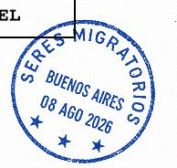
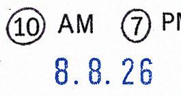
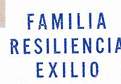
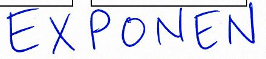
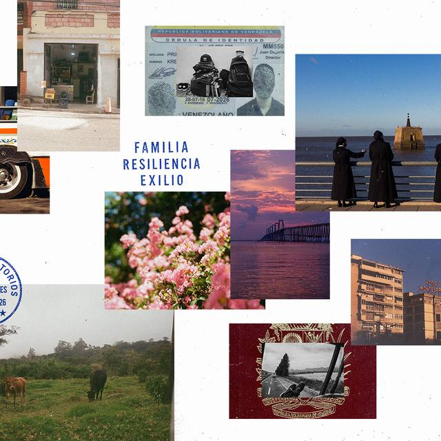
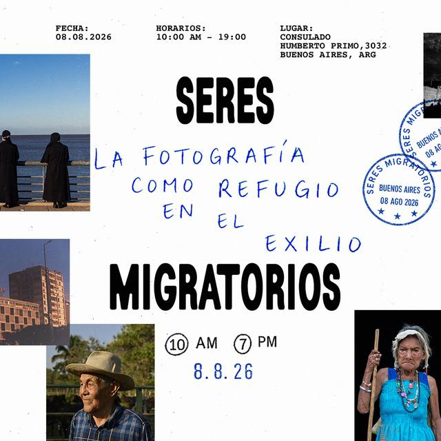

SVG en azul-sello: anillo doble, "SERES MIGRATORIOS" en arco, ciudad y fecha al centro, tres estrellas abajo. Rotado -12°.
Izquierda: edición 01. Derecha: variante con ciudad y fecha variables para futuras ediciones.

Referencia impresa: el sello original, con la tinta cortada por el grano del papel.
ESCUDO
Escudo nacional de Venezuela en azul-sello con textura de sello y arco de ocho estrellas arriba. Símbolo nacional, de dominio público.
Se usa como imagen (SVG o PNG). Nunca se redibuja en CSS.
PENDIENTE
Vectorizar el escudo a SVG con fondo transparente, en un solo path por color, para servirlo desde astro:assets.
SELLOHORARIO
Números en círculo con borde 2 px y fecha corta en azul con textura de sello. Es el único otro lugar, con el Sello, donde hay curvas.
10
AM
7
PM
8.8.26
Valores de la edición 01. Para otra edición: [HORA INICIO] / [HORA CIERRE] / [FECHA CORTA].

Referencia impresa del post original.
PALABRASCLAVE
Las tres palabras de la marca apiladas en display azul-sello con textura. Pueden ir verticales en un margen.
FAMILIA
RESILIENCIA
EXILIO

Referencia impresa: van al margen, cortadas por el borde del lienzo.
ANOTACION
Palabra o frase manuscrita en azul-marcador, rotada entre -3° y 2°, siempre superpuesta a otro elemento.
EXPONEN
FOTÓGRAFOS
aguante la fotografía

Referencia: letra real escaneada. Gochi Hand solo cubre texto dinámico.
FOTOPEGADA
Tres variantes: pegada (borde papel-puro, sombra, rotación), recortada (sin borde) y sangrada (cortada por el borde del lienzo).

pegada · rotación 1.5°

recortada · sin borde
sangrada · pegada al borde del lienzo y cortada
HILOTRICOLOR
Línea de 3 px en tres tramos iguales. Detalle de pie de página o de badge de edición: es la única aparición del tricolor en la UI.
tamaño real · 3 px
#F2C230
#0033A0
#E0393E
TEXTURAS
Dos texturas, ambas en SVG embebido: el papel del fondo de página y la tinta mal entintada de los sellos. No se usan en ningún otro lado.
.papel
Grano feTurbulence a opacidad .07 en multiply + motas negras dispersas a .5.
.sello-grano
Máscara de ruido sobre cualquier elemento azul: sellos, escudo, palabras clave.
Las dos texturas se apagan con prefers-reduced-motion solo si se animan; por defecto son estáticas y no afectan el contraste del texto porque van detrás, con pointer-events desactivados. En impresión el grano ya viene en el papel: se quitan.